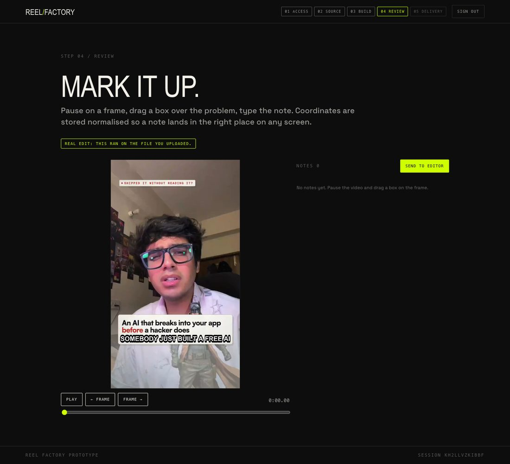
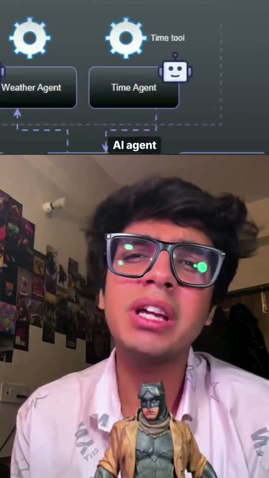
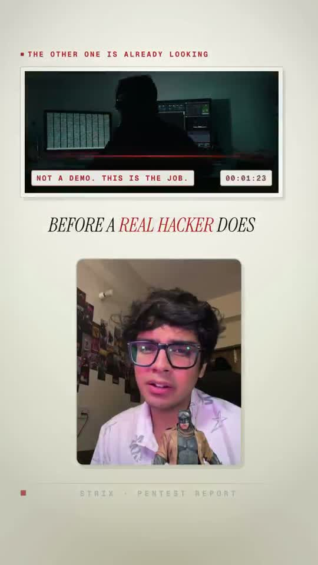
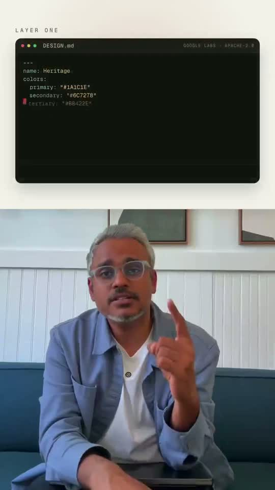
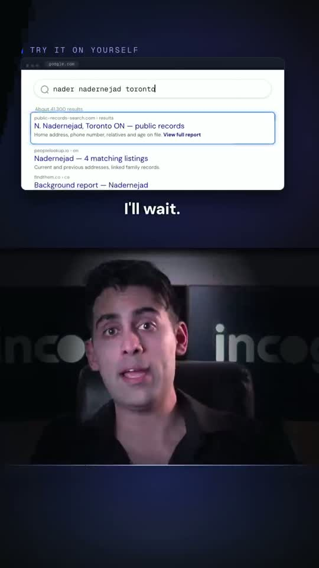
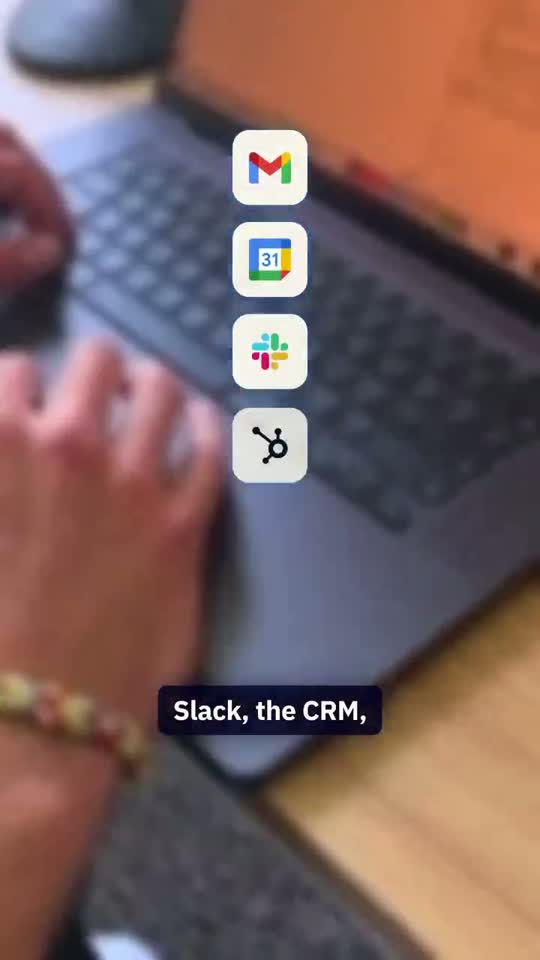
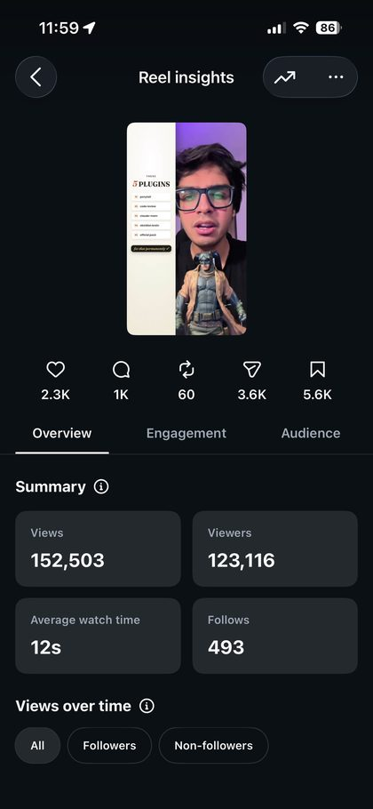
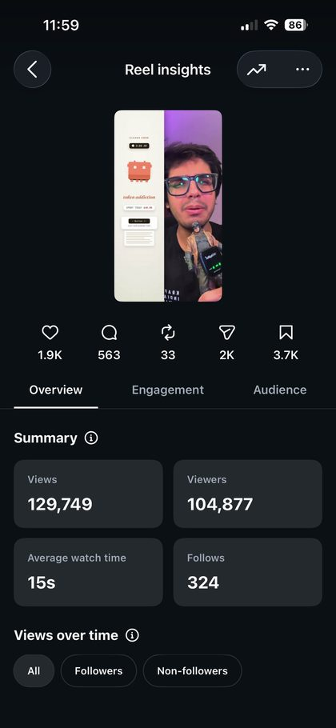
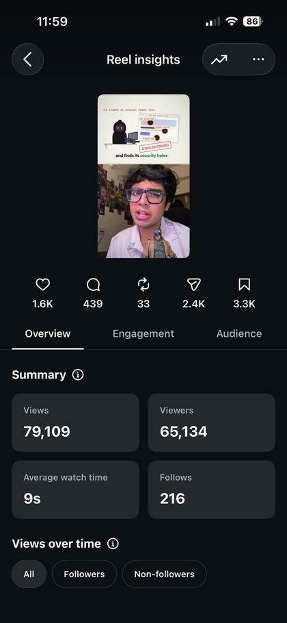
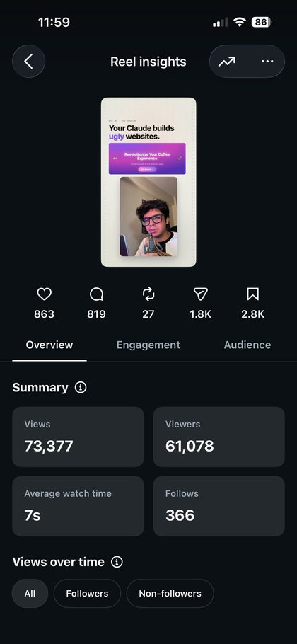

Reel Factory
Hand it a raw talking-head take. Get back a finished, posting-ready vertical reel. Change anything by drawing a box on the frame.
The problem
Cut the dead air, time captions to the word, build graphics, keep text off your own face, honour the safe zones, sound design. Output collapses to whatever one person can cut.
Money, plus a feedback loop run over voice notes and screenshots. Rounds three and four are usually the same note, restated.
Every reel looks like every other reel. And the template does not know where your chin is, so the caption lands on your face.
Video feedback barely survives being written down. "The caption thing at the start looks weird" is not actionable. The editor guesses, burns a render, guesses again.
The flow
Drop the raw take. ffprobe reads resolution, duration, bitrate and colour transfer. An HDR clip is caught here: one HDR source drags the whole render into HDR and shifts every other shot.
Whisper at word level. Beats come from RMS envelope onsets, not the transcriber. Whisper smears emphatic delivery, and on one film 54 of 69 onsets moved by more than 60ms.
Apple Vision. Crown from person segmentation, chin and centre-x from the face contour. The face bounding box is not the head, it stops at the hairline.
An agent authors a composition for this specific video. Scenes land on word onsets. Card, split or full-bleed is decided by arithmetic, not taste.
guard.py drives the timeline in a real browser and hit-tests what actually paints at every beat. Text on the face, text on text, an element in the UI band, a beat over blank space.
2160x3840. Delivered bitrate is checked against the master, because the same CRF has produced 36.8 and 24.9 Mbps as content changed.
Scrub, drag a box over the problem, type the note. Coordinates are normalised, so a note left on a laptop lands correctly on a phone.
13 measured thresholds. Resolution and bitrate against the master, loudness, frozen fraction, face presence, chin position, banned punctuation.

The review step. Pause, drag, type. The note carries its timecode and seeks back on click.
The output

Card reel
floating face card

Card reel
zero full-bleed face

Paper split
face on screen throughout

Longform chunked
graphics top, face bottom

Fast cut ad
sub 1.5s mean shot
Every frame above is from a real shipped film. Fifteen more ship inside the repo as 720p proxies, so the standard is watchable, not described.
Proof
Instagram's own insight screens from @shreyansharora05. Every reel is public, so every number here is independently checkable.

152,503 views · 5.6K saves

129,749 views · 3.7K saves

79,109 views · 3.3K saves

73,377 views · 2.8K saves
Saves and sends are the numbers that matter. Instagram ranks on sends per reach. These four were saved 15,400 times, sent to another person 9,800 times, and pulled 1,399 follows.
What makes it different
Four defect classes shipped past conventional linting on real videos. Each one now has a check that measures what paints, not what is positioned.
| Check | The failure that created it |
|---|---|
| PAINT | Captions sat at exactly the right y1396 with no z-index, under a full-bleed video. No captions for 27 of 43 seconds. Every gate passed. |
| TXTTXT | Every gate checked graphics against the face and the band. Two graphics colliding was unguarded, and a panel printed over a caption for a whole hook. |
| ASSET | An asset directory did not exist, so 13.3s rendered as a blank white card. The card paints; the image inside it is 0x0. |
| VOID | A beat that is one element over blank paper. Passes everything and reads as a hole. |
And a benchmark that scores the finished file against 13 thresholds, each carrying the video and the reaction that set it.
$ python3 tools/qa/benchmark.py out/reel.mp4 \
--creator card-reel --master take.mp4
PASS delivery.pixel_ratio 1.000 x master
PASS delivery.bitrate_ratio 1.155 x master
PASS audio.true_peak_dbtp -1.100 dBTP
PASS motion.frozen_fraction 0.000
PASS face.chin_max_norm 0.803
FAIL copy.em_dashes 8
Run against three already-delivered, client-approved films, all three failed. It found banned punctuation in 19 delivered caption packs and 9.1 seconds of frozen video inside an approved cut. That is the tool working.
Honest scope
| Cloned web app | Full pipeline, in your terminal | |
|---|---|---|
| Time | About 9 seconds for a 20s clip | 40 to 50 minutes |
| You get | 9:16 crop, dead air cut, burned captions clear of the UI band, loudness normalised | Bespoke graphics, solved face geometry, safe-zone gates, SFX bed, 4K master |
| Runs on | Node alone | Claude Code, ffmpeg, whisper, playwright, swift |
| Good for | Seeing the whole flow end to end | Something you would actually post |
The web app genuinely edits your file, and it is genuinely not the full system. A web request cannot author a composition and render 4K, so this project does not pretend it can. Both paths ship here and the README says which is which.
Reel Review
The feedback loop is a real product, not a demo screen. It runs locally for your own passes and ships a private link when a client needs to see the cut.
Scrub to the frame, drag a box, pin, arrow or pen over the problem, type the note. The paused frame with your markup baked in is saved as a JPEG, so the editor sees the exact thing you circled.
A frame note is a local fix. A whole-video note ("SFX too loud") applies to the entire cut regardless of where it was written, and is exported in its own section. Mixing them is how global notes get half applied.
Send to editor writes a feedback-round<N>.md the agent reads at the start of the next round. It refuses to overwrite an earlier round, because one was lost that way.
rr share prints one private link. No index route, every path guarded by a per-project key, so a link cannot enumerate other clients.
Re-render and it lands as v2 under the same link. The client wipes v1 against v2 side by side rather than comparing from memory.
rr pull brings their notes in, rr push sends your replies back. Order matters: fix, reply, push, and only then share the new cut. Sharing first makes every addressed note look ignored.
Normalised coordinates, so a note left on a laptop lands in the right place on a phone.
Try it
git clone https://github.com/Shreyhac/content-automation cd content-automation bash tools/check-env.sh # the web surface node web/server.js # localhost:8787 # the real thing # open Claude Code here and hand it a take
No npm install for the web app. No API key. No network. The full pipeline wants ffmpeg, whisper, playwright and swift, all verified by one script.
github.com/Shreyhac/content-automation